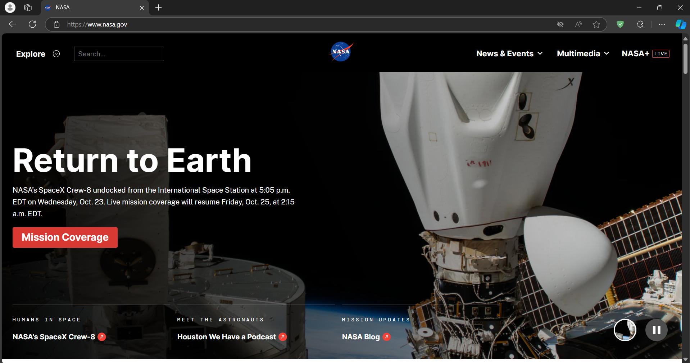

What is the name of the website?
NASA
Who is the site's target audience?
The target audience is anyone that is curious about space and air.
How is the site organized?
NASA has organized there site to be hierarchical.
Which CRAP Design Principle does the site use?
NASA uses the principle of repetition. As you navigate their site, you can see the same fonts for titles. Also, the colors that use for titles depending on if the background is white, black, or a picture.
What is the Audit Score?
64
What is the site's effectiveness? Does it support users in completing actions accurately?
The site's effectiveness tends to deal with navigating the site to find certain information pertaining to space. I do think that the site supports users in completing actions accurately by having detailed titles so people can click the right buttons to get to the right page.
What is the site's efficiency? Can users can perform tasks quickly?
The site's efficiency is also good in my opinion. I say this because the NASA website has a search bar at the top, making it quicker and easier to search for what you need without having to click through buttons or links to get to a particular page.
How is the engagement? Is it pleasant to use and appropriate for its industry/topic?
The site's engagement is pleasant to use and appropriate for its industry/topic. Nine times out of ten, when you need to or want to use a site to research space, NASA is a great tool. Plus, you can even watch live events when they are schedule, like the re-entry and splashdown of SpaceX Crew-8 October 25th at 2:15 am EST.
Make at least one recommendation to improve this website based on what you learned in this module.
After looking at the site, and the feedback of the accessibility checker, I would say NASA should look at their color contrast ratio, and make sure that it meets the guidelines WCAG has set in place. By doing so, people with color-blindess or other visual impairments can use the the site properly.